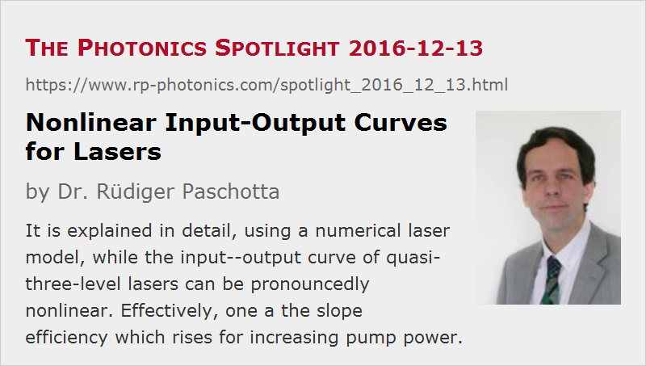

Nonlinear Input–Output Curves for Lasers
Posted on 2016-12-13 as a part of the Photonics Spotlight (available as e-mail newsletter!)
Permanent link: https://www.rp-photonics.com/spotlight_2016_12_13.html
Author: Dr. Rüdiger Paschotta, RP Photonics Consulting GmbH
Abstract: It is explained in detail, using a numerical laser model, while the input--output curve of quasi-three-level lasers can be pronouncedly nonlinear. Effectively, one a the slope efficiency which rises for increasing pump power.

Today, I have a topic in laser physics. According to simple laser models, one would expect that the output power of a laser depends linearly on the pump power above the threshold pump power. Long ago, I published a Spotlight article where I presented various reasons why that dependence can actually be nonlinear under various circumstances. One of the explained reasons was related to quasi-three-level lasers where the transverse shape of the excitation profile of the laser ions depends on the power level. Today, I want to come back to this issue and give some more details.
To begin with, let us consider why exactly that curve should be linear above the laser threshold, at least in simple cases:
- At any power level above threshold, the laser gain per round trip must exactly equal the resonator losses per round trip once we are in the steady state. So the laser gain must be clamped to a constant value above threshold.
- When ignoring the transverse dependencies (or simply assuming transverse top-hat intensity profiles for signal and pump) as well as temperature changes, there is a fixed relation between the laser gain and the average excitation of laser ions.
- For constant gain, we thus must have a constant number of excited laser ions. That means that the power lost by fluorescence is also constant.
- Therefore, an increased pump power can only be converted into increased laser output power, not into additional fluorescence. Some constant fraction of additional pump power is lost through incomplete pump absorption, the quantum defect and due to parasitic intracavity losses, but the fractions of those power losses are usually all constant. Therefore, each additional milliwatt of pump power adds the same amount to the laser output power.
What changes if we have Gaussian shapes of the pump and laser beam, for example, is that we don't have a fixed relation between gain and excitation of laser ions any more. This is because ions near the beam axis, “seeing” the maximum laser intensity, contribute more effectively to the laser gain than ions further away from the axis, and the shape of the transverse excitation pattern can change with the power level.
Using a Laser Model
For studying that in a realistic case, I have set up a simple continuous-wave bulk laser model, using the software RP Fiber Power. (Although that has been designed for fiber lasers, it works as well for bulk lasers as long as we can assume constant shapes of the transverse intensity patterns, which is very often the case.) Here, I have assumed Gaussian beams with 100 um beam radius for both pump and laser radiation and an output coupler mirror with 80% reflectivity. Pump and signal wavelengths are 940 nm and 1030 nm, respectively.
The first diagram shows the laser output power and fluorescence power as functions of the input pump power:
We see the pronouncedly nonlinear input–output characteristics. Also, the fluorescence power rises substantially when going further above the threshold pump power.
Now we look at the transverse distribution of the Yb excitation in order to understand the latter finding:
At the laser threshold (3 W pump power), the excitation has roughly got the shape of the pump intensity profile (actually a bit broader due to saturation preferentially on the beam axis). For higher pump powers, the excitation profile gets substantially broader, but finally approaches an asymptotic shape. Therefore, the gain efficiency drops substantially above the laser threshold but then approaches its asymptotic value. A consequence of that is that the total Yb excitation and thus also the fluorescence power first rises quickly but later on less quickly. That is consistent with the initially smaller slope efficiency, which then rises.
It still needs to be explained why the excitation profile gets so much broader for higher pump powers. That results from the quasi-three-level characteristics of the gain medium. The following diagram shows the transverse gain distribution:
One can see that at threshold the gain is high on the beam axis but substantially negative for radial positions beyond 70 um, because there we have reabsorption of unexcited ytterbium. For higher pump powers, the increasing pump and laser intensity in that region further increase the excitation, whereas the excitation in the center region is reduced by saturation, since the overall gain must stay constant.
For a 4-level gain medium, where that reabsorption effect does not occur, there is only a weak broadening of the excitation pattern for higher powers. Therefore, there is only a weak nonlinearity of the input–output curve.
One can also test these are things in situations where the pump and signal beam radii are different. Qualitatively, quite similar things happen there.
This article is a posting of the Photonics Spotlight, authored by Dr. Rüdiger Paschotta. You may link to this page and cite it, because its location is permanent. See also the RP Photonics Encyclopedia.
Note that you can also receive the articles in the form of a newsletter or with an RSS feed.
Questions and Comments from Users
Here you can submit questions and comments. As far as they get accepted by the author, they will appear above this paragraph together with the author’s answer. The author will decide on acceptance based on certain criteria. Essentially, the issue must be of sufficiently broad interest.
Please do not enter personal data here; we would otherwise delete it soon. (See also our privacy declaration.) If you wish to receive personal feedback or consultancy from the author, please contact him e.g. via e-mail.
By submitting the information, you give your consent to the potential publication of your inputs on our website according to our rules. (If you later retract your consent, we will delete those inputs.) As your inputs are first reviewed by the author, they may be published with some delay.
|  |
If you like this page, please share the link with your friends and colleagues, e.g. via social media:
These sharing buttons are implemented in a privacy-friendly way!